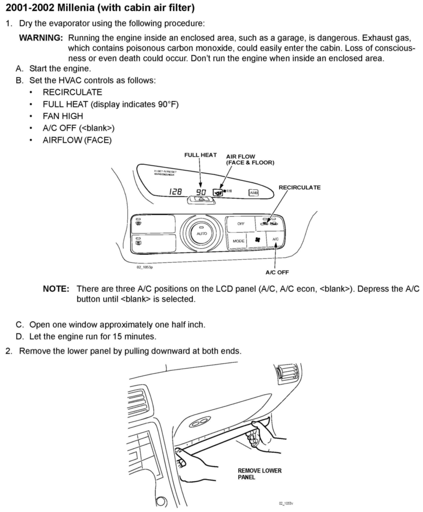
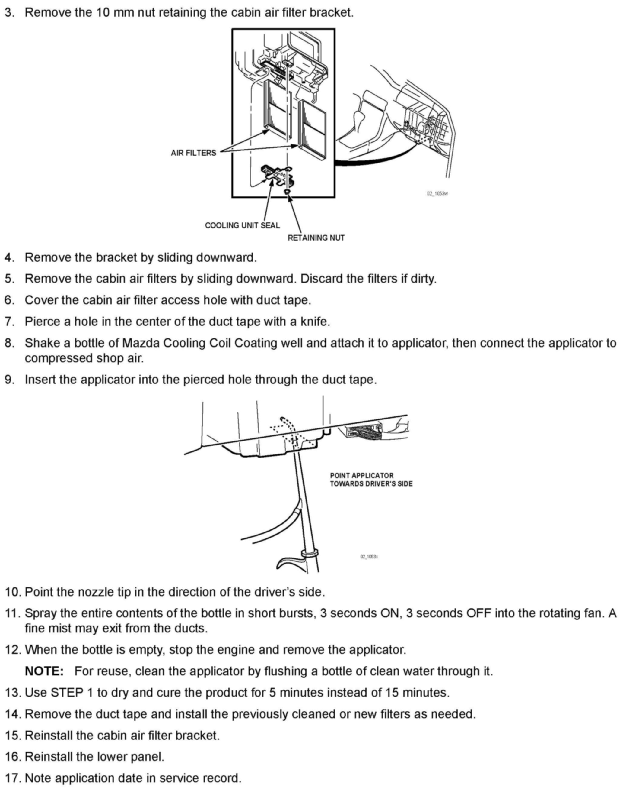

Operation CHARM
: Car repair manuals for everyone.
Home
>>
Mazda
>>
1999
>>
MX-5 Miata L4-1.8L DOHC
>>
Repair and Diagnosis
>>
Technical Service Bulletins
>>
Customer Interest
>>
A/C - Musty/Mildew Odors From vents
>>
Repair Procedures
>>
2001-2002 Millenia (With Cabin Air Filter)
2001-2002 Millenia (With Cabin Air Filter)

Steps 1 - 2

Steps 3 - 17